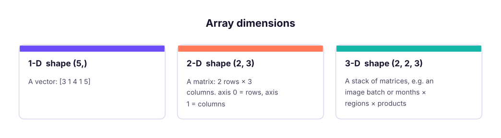
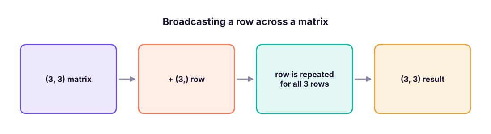

NumPy: Fast Arrays, Vectorisation and Broadcasting
Learn the array library under pandas, scikit-learn and PyTorch. Create arrays, understand shape and dtype, index and slice in 1-D and 2-D, filter with boolean masks, compute with vectorised operations, aggregations along axes and broadcasting, generate random data and do basic linear algebra.
- Create arrays and describe their shape, ndim, dtype and size
- Index, slice and filter 1-D and 2-D arrays with boolean masks and fancy indexing
- Use vectorised arithmetic, universal functions and aggregations along an axis
- Apply broadcasting rules, reshape, stack and split arrays
- Generate reproducible random data and perform matrix operations
Why NumPy?
A Python list holds pointers to separate objects; a NumPy array stores numbers of one type in one contiguous block of memory and runs operations in compiled C. The result: code that is shorter and usually many times faster (the gap grows with heavier maths).
import numpy as np, time
n = 1_000_000
py = list(range(n)); arr = np.arange(n)
t0 = time.perf_counter(); sq_list = [x * x for x in py]; t1 = time.perf_counter(); sq_arr = arr * arr; t2 = time.perf_counter()
print(f"list comprehension {1000*(t1-t0):.1f} ms | numpy {1000*(t2-t1):.1f} ms | same result: {sq_list[-1] == sq_arr[-1]}")
print(np.__version__)list comprehension 58.6 ms | numpy 24.8 ms | same result: True 2.5.3
Creating arrays
a = np.array([3, 1, 4, 1, 5])
m = np.array([[1, 2, 3], [4, 5, 6]])
print(a, a.dtype, a.shape, a.ndim, a.size)
print(m, m.shape, m.ndim, m.dtype)
print(np.zeros(3), np.ones((2, 2)), np.full(3, 7), np.eye(2))
print(np.arange(0, 10, 2.5), np.linspace(0, 1, 5), np.array([1, 2.5]).dtype, np.array([1, 2], dtype=np.float32).dtype)[3 1 4 1 5] int64 (5,) 1 5 [[1 2 3] [4 5 6]] (2, 3) 2 int64 [0. 0. 0.] [[1. 1.] [1. 1.]] [7 7 7] [[1. 0.] [0. 1.]] [0. 2.5 5. 7.5] [0. 0.25 0.5 0.75 1. ] float64 float32

All items share one dtype (int64, float64, bool, <U5 strings…). Mixing ints and floats upcasts to float.
Indexing and slicing
a = np.array([10, 20, 30, 40, 50, 60])
print(a[0], a[-1], a[1:4], a[::2], a[::-1])
m = np.arange(1, 13).reshape(3, 4)
print(m)
print(m[0, 2], m[1], m[:, 1], m[1:, 2:], m[-1, -1]) # [row, column]10 60 [20 30 40] [10 30 50] [60 50 40 30 20 10] [[ 1 2 3 4] [ 5 6 7 8] [ 9 10 11 12]] 3 [5 6 7 8] [ 2 6 10] [[ 7 8] [11 12]] 12
b = a[1:4] does not copy; changing b changes a. Use a[1:4].copy() when you need an independent array. (Python lists behave the other way: slicing copies.)
Boolean masks and fancy indexing
sales = np.array([120, 45, 300, 80, 210, 15])
mask = sales > 100
print(mask, sales[mask], sales[(sales > 50) & (sales < 250)], sales[~mask]) # & | ~ with brackets
print(sales[[0, 2, 4]], np.where(sales > 100, "high", "low"), np.where(sales > 100)[0])
sales[sales < 50] = 0 # conditional assignment
print(sales, np.count_nonzero(sales), (sales > 100).mean())[ True False True False True False] [120 300 210] [120 80 210] [45 80 15] [120 300 210] ['high' 'low' 'high' 'low' 'high' 'low'] [0 2 4] [120 0 300 80 210 0] 4 0.5
Vectorised maths and aggregations
price = np.array([100.0, 250.0, 80.0]); qty = np.array([3, 1, 10])
print(price * qty, (price * qty).sum(), price * 1.18, np.round(np.sqrt(price), 2), np.log(price).round(2))
m = np.array([[5, 2, 9], [1, 7, 3]])
print(m.sum(), m.sum(axis=0), m.sum(axis=1), m.max(axis=1), m.argmax(axis=1), m.mean(axis=0))
x = np.array([2, 4, 4, 4, 5, 5, 7, 9])
print(x.mean(), np.median(x), x.std(), x.std(ddof=1).round(3), np.percentile(x, [25, 75]), np.cumsum(x), np.diff(x))[300. 250. 800.] 1350.0 [118. 295. 94.4] [10. 15.81 8.94] [4.61 5.52 4.38] 27 [ 6 9 12] [16 11] [9 7] [2 1] [3. 4.5 6. ] 5.0 4.5 2.0 2.138 [4. 5.5] [ 2 6 10 14 19 24 31 40] [2 0 0 1 0 2 2]
axis=0 collapses rows (one result per column); axis=1 collapses columns (one result per row). ddof=1 gives the sample standard deviation that pandas uses by default.
Broadcasting
When shapes differ, NumPy stretches the smaller array along dimensions of size 1, without copying data.

m = np.arange(1, 10).reshape(3, 3)
print(m + np.array([10, 20, 30])) # add to each row
print(m * np.array([[1], [10], [100]])) # multiply each row by its own factor (column vector)
scores = np.array([[70, 80, 90], [60, 75, 85], [88, 92, 79]], dtype=float)
z = (scores - scores.mean(axis=0)) / scores.std(axis=0) # standardise each column in one line
print(z.round(2))[[11 22 33] [14 25 36] [17 28 39]] [[ 1 2 3] [ 40 50 60] [700 800 900]] [[-0.23 -0.33 1.19] [-1.09 -1.03 0.07] [ 1.32 1.36 -1.26]]
Rule: compare shapes from the right; dimensions are compatible if equal or one of them is 1.
Reshaping, stacking, sorting
a = np.arange(12)
print(a.reshape(3, 4).shape, a.reshape(2, -1).shape, a.reshape(3, 4).T.shape, a.reshape(3, 4).ravel()[:5])
x, y = np.array([1, 2]), np.array([3, 4])
print(np.vstack([x, y]), np.hstack([x, y]), np.column_stack([x, y]), np.concatenate([x, y]))
v = np.array([30, 10, 20, 10])
print(np.sort(v), np.argsort(v), np.unique(v, return_counts=True), v[np.argsort(-v)][:2])(3, 4) (2, 6) (4, 3) [0 1 2 3 4] [[1 2] [3 4]] [1 2 3 4] [[1 3] [2 4]] [1 2 3 4] [10 10 20 30] [1 3 2 0] (array([10, 20, 30]), array([2, 1, 1])) [30 20]
Random numbers
Use the modern generator API with a seed so results are reproducible.
rng = np.random.default_rng(42)
print(rng.integers(1, 7, size=10)) # dice
print(rng.normal(loc=50, scale=10, size=5).round(1)) # normal distribution
print(rng.choice(["A", "B"], size=8, p=[0.7, 0.3]), rng.uniform(0, 1, 3).round(3))
sample = rng.normal(50, 10, 100_000)
print(round(sample.mean(), 2), round(sample.std(), 2), round(((sample > 40) & (sample < 60)).mean(), 3)) # about 68% within 1 sd[1 5 4 3 3 6 1 5 2 1] [37. 51.3 46.8 49.8 41.5] ['A' 'B' 'A' 'B' 'A' 'A' 'A' 'A'] [0.828 0.632 0.758] 49.96 10.04 0.682
Linear algebra basics
Machine-learning models are built from these operations.
A = np.array([[2, 1], [1, 3]]); b = np.array([5, 10])
print(A @ np.array([1, 2]), A.T, np.linalg.det(A).round(2), np.linalg.inv(A).round(3))
print(np.linalg.solve(A, b)) # solves 2x + y = 5, x + 3y = 10
w = np.array([0.5, -0.2]); X = np.array([[1.0, 2.0], [3.0, 1.0], [2.0, 2.0]])
print(X @ w) # predictions of a linear model y = Xw[4 7] [[2 1] [1 3]] 5.0 [[ 0.6 -0.2] [-0.2 0.4]] [1. 3.] [0.1 1.3 0.6]
Real data: house prices
import pandas as pd
h = pd.read_csv("house_prices.csv")
area, price = h["area_sqft"].to_numpy(), h["price_lakh"].to_numpy()
print("missing values:", np.isnan(area).sum(), "area,", np.isnan(price).sum(), "price") # real data has gaps
ok = ~np.isnan(area) & ~np.isnan(price)
area, price = area[ok], price[ok] # keep complete rows
per_sqft = price * 1e5 / area
print(f"{len(price)} houses | median price ₹{np.median(price):.1f} lakh | median ₹{np.median(per_sqft):,.0f}/sq ft")
print("price percentiles 10/50/90:", np.percentile(price, [10, 50, 90]).round(1))
big = area > 1500
print(f"{big.mean():.0%} are over 1,500 sq ft; their median price is ₹{np.median(price[big]):.1f} lakh vs ₹{np.median(price[~big]):.1f} lakh")
r = np.corrcoef(area, price)[0, 1]
slope, intercept = np.polyfit(area, price, 1)
print(f"correlation area-price r = {r:.2f}; fitted line: price ≈ {intercept:.1f} + {slope*100:.2f} lakh per 100 sq ft")missing values: 25 area, 0 price 1175 houses | median price ₹78.7 lakh | median ₹6,258/sq ft price percentiles 10/50/90: [ 40.3 78.7 119.9] 27% are over 1,500 sq ft; their median price is ₹110.0 lakh vs ₹68.1 lakh correlation area-price r = 0.79; fitted line: price ≈ -7.5 + 7.05 lakh per 100 sq ft
np.polyfit fits a straight line by least squares, which is the same idea as linear regression (ML track).
Summary
- Arrays hold one dtype in contiguous memory; operations are vectorised and much faster than Python loops.
- Know
shape,ndim,dtype,size; index with[row, col]; slices are views (use.copy()). - Boolean masks (
a[a > 0],&,|,~) andnp.wherefilter and recode. - Aggregate with
axis=0(per column) oraxis=1(per row);ddof=1for sample standard deviation. - Broadcasting stretches size-1 dimensions; reshape with
-1to infer a dimension. - Use
np.random.default_rng(seed)and@for matrix multiplication.
1. What is np.arange(12).reshape(3, -1).shape?
2. What does m.sum(axis=0) return for a 2 × 3 matrix?
3. Which expression keeps values between 10 and 20?
& with brackets for element-wise conditions.4. After b = a[0:3]; b[0] = 99, what happens to a[0]?
.copy() to avoid this.5. Can a (3, 4) array be added to a (4,) array?
6. How do you make random results reproducible?
(1) Create a 5 × 5 array of 1..25 and select the diagonal and the last column. (2) Replace all negative values in an array with 0. (3) Standardise the area_sqft column (z-scores) and count values beyond ±2. (4) Simulate 10,000 rolls of two dice and estimate P(sum = 7). (5) Solve 3x + 2y = 12, x − y = 1.
Show solution
g = np.arange(1, 26).reshape(5, 5); print(np.diag(g), g[:, -1])
v = np.array([3, -1, 4, -5]); v[v < 0] = 0; print(v)
z = (area - area.mean()) / area.std(); print((np.abs(z) > 2).sum())
rng = np.random.default_rng(0); rolls = rng.integers(1, 7, (10_000, 2)).sum(axis=1); print((rolls == 7).mean()) # about 1/6
print(np.linalg.solve([[3, 2], [1, -1]], [12, 1])) # x = 2.8, y = 1.8Q: Why is NumPy faster than Python lists? Contiguous memory of one dtype, operations implemented in C over the whole array (vectorisation), and no per-element Python overhead.
Q: What is broadcasting? NumPy's rule for operating on arrays of different shapes by virtually repeating dimensions of size 1, aligning shapes from the right.
Q: View vs copy?
Basic slices return views that share memory; fancy/boolean indexing and .copy() return copies.
Q: Difference between np.std(x) and pandas.Series.std()?
NumPy defaults to population std (ddof=0); pandas defaults to sample std (ddof=1).
Practise more online
Free, trusted places to test yourself on this topic. Links open the original site in a new tab.